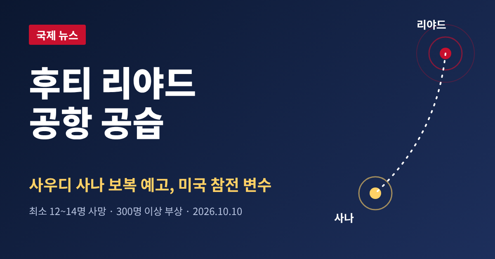
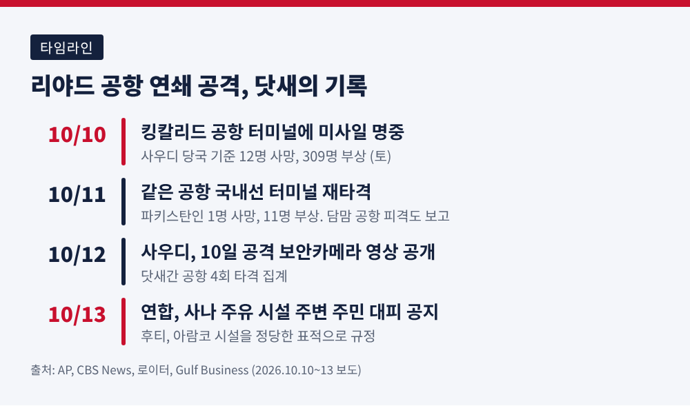
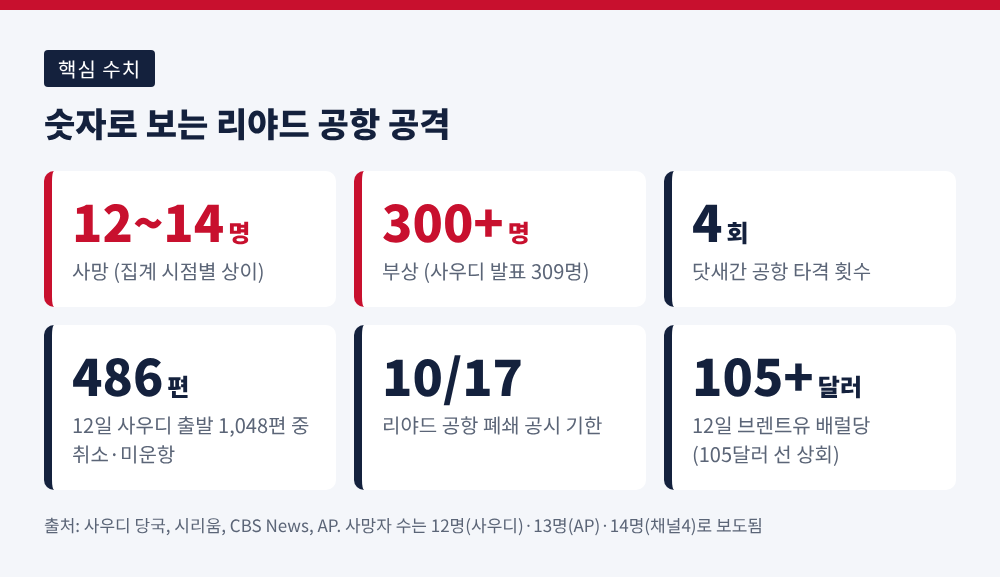
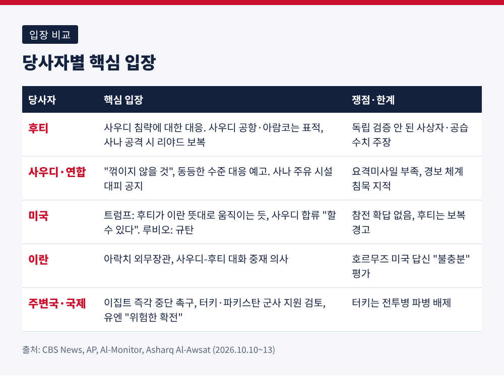
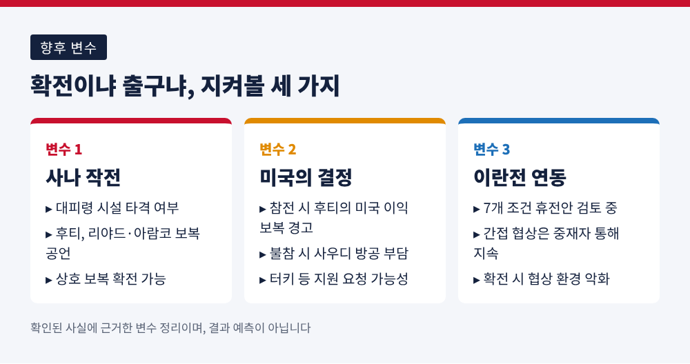

오늘은 이란이 지원하는 예멘 후티 반군이 사우디아라비아 리야드의 킹칼리드 국제공항을 공격한 사건을 정리해 보려 합니다.
10월 10일 터미널에 미사일이 떨어져 최소 12명이 숨지고 300명 넘게 다쳤습니다.
사우디 주도 연합은 사나 보복을 예고했고, 도널드 트럼프 미국 대통령은 참전 가능성을 열어 두었습니다.
10월 10일 토요일, 리야드 킹칼리드 국제공항 여객터미널에 미사일이 명중했습니다.
사우디 당국은 12명이 숨지고 309명이 다쳤다고 밝혔습니다.
이후 인도 국적 부상자가 숨지면서 사망자는 13명으로 늘었고, 영국 채널4는 14명 사망, 320명 이상 부상으로 전했습니다.
집계 시점에 따라 숫자가 달라지는 만큼, 이 글에서는 "최소 12~14명"으로 적겠습니다.
희생자 국적도 다양했습니다.
사우디인 4명, 방글라데시인 2명, 그리고 미국·요르단·팔레스타인·시리아·수단·이집트 국적이 각 1명씩 포함됐다고 AP는 전했습니다.
다음 날인 11일에는 같은 공항의 국내선 터미널(3·4)이 다시 공격받아 파키스탄인 1명이 숨지고 11명이 다쳤습니다.
닷새 동안 이 공항이 네 차례 타격을 받은 셈입니다.
사우디는 동부 담맘의 킹파흐 공항도 공격받았다고 밝혔습니다.

첫째, 피해 규모입니다.
AP는 사우디 본토에서 10년여 만에 가장 치명적인 공격이라고 했고, 이란전 개전 이후 걸프 아랍국에서 발생한 공격 중에서도 가장 많은 사망자를 냈다고 전했습니다.
둘째, 표적의 성격입니다.
공항은 군사시설이 없는 민간시설입니다.
유엔 예멘 특사 한스 그룬드베리는 이번 공격을 "위험한 확전"이자 지역 안보에 대한 "중대한 위협"이라고 규정하고, 민간인과 민간시설을 공격하지 말라는 국제인도법 준수를 촉구했습니다.
셋째, 파급 범위입니다.
미국·영국·독일·호주·캐나다는 자국민에게 공항을 피하라고 경고했습니다.
항공분석업체 시리움에 따르면 12일 사우디 출발편 1,048편 중 486편이 취소되거나 운항하지 못했습니다.
리야드 공항의 폐쇄는 항공고시 기준 10월 17일까지 이어집니다.
에어인디아는 리야드·담맘·지다 노선을 17일까지 전면 취소했고, 델타항공은 애틀랜타-리야드 신규 취항을 2027년 3월로 미뤘습니다.

후티 군사 대변인 야히야 사리는 이번 공격이 "사우디의 잔혹한 침략"에 대한 대응이라고 밝혔습니다.
후티는 24시간 동안 사우디가 예멘 후티 통제 지역에 120회 넘게 공습했다고 주장합니다.
후티 보건부는 연합 공습으로 5주 동안 예멘인 91명이 숨졌고 그중 60%가 여성과 아동이라고 주장했습니다.
다만 로이터는 양측의 사상자 주장을 독립적으로 확인하지 못했다고 밝혔습니다.
후티의 경고 수위도 높아졌습니다.
사우디 영공을 군사구역으로 선언했고, 메카와 메디나를 제외한 사우디 공항은 표적이라며 승객들에게 이용하지 말라고 했습니다.
13일에는 사우디 국영 아람코 시설을 "정당한 표적"으로 규정하고, 사나가 공격받으면 리야드와 아람코 담맘 본사, 리야드 정유소, 킹칼리드 공항에 "가혹하고 고통스러운" 대응을 하겠다고 경고했습니다.
후티 정치국 대변인 무함마드 알부카이티는 사우디가 전쟁 종식 요구에 응하지 않으면 사우디의 석유 시설이 파괴될 때까지 공격이 이어질 것이라고도 말했습니다.
사우디 에너지장관 압둘아지즈 빈 살만 왕자는 왕국이 "꺾이지 않을 것"이며 "동등하게 진지한" 대응을 하겠다고 밝혔습니다.
13일에는 연합 대변인 투르키 알말리키 준장이 사나 서부 외곽의 예멘석유회사 알사바하 시설 주변 주민에게 "작전"에 앞서 대피하라고 공지했습니다.
작전의 내용이나 시점은 밝히지 않았습니다.
이 대목은 보도마다 차이가 있습니다.
CBS 라이브 보도는 연합이 사나와 다마르, 사아다의 석유 시설을 타격했다고 확인했다고 전했습니다.
반면 알모니터는 게재 시점까지 연합이 타격 여부를 확인하지 않았다고 적었습니다.
후티 매체는 카마란 섬과 자우프 등에 공습이 있었다고 주장했지만 사우디는 이를 확인하지 않았습니다.
사우디의 방어에는 약점이 드러났습니다.
월스트리트저널은 요격미사일 부족이 9월 중순부터 이어지고 있다고 보도했고, 사우디는 프랑스·영국·이집트·파키스탄에 방공 지원을 요청한 것으로 알려졌습니다.
로이터는 10일 공격 때 공개 미사일 경보 체계가 울리지 않았다고 전했습니다.
사우디는 방공망이 왜 뚫렸는지 조사하고 있다고 합니다.
사우디는 2015년 아랍 연합을 이끌고 예멘 내전에 개입했습니다.
후티를 수도 사나에서 몰아내려 했지만 전선은 교착됐고, 전투와 기근으로 수십만 명이 숨졌습니다.
2022년 휴전으로 갈등이 동결됐으나 올여름 무너졌습니다.
예전엔 휴전선을 사이에 둔 소강 국면이었습니다.
지금은 후티가 바브엘만데브 해협 일대의 해안을 장악하고 예멘 3대 도시 타이즈를 포위한 채 사우디 본토를 직접 타격하는 단계로 올라섰습니다.
후티는 사우디 선박을 겨냥한 홍해 봉쇄를 선언했고, 사우디 지원 예멘 정부는 이번 주 탈환 공세를 시작했지만 진척은 더딥니다.
여기에 이란전이 겹칩니다.
2026년 2월 말 미국과 이스라엘의 테헤란 공습으로 시작된 전쟁은 7월 휴전이 깨졌고, 미국은 7월 14일부터 이란 항구를 봉쇄하고 있습니다.
AP가 인용한 전문가 마이클 나이츠는 후티를 이란의 역내 동맹 가운데 가장 공격적인 세력으로 평가하며 "헤즈볼라가 20년 걸린 것을 후티는 5년에 개발했다"고 말했습니다.

트럼프 대통령은 후티가 "매우 못되게 행동하고 있다"며 이란의 지시로 움직이는 것 같다고 말했습니다.
사우디 타격에 합류할 수 있다고 하면서도 확답은 하지 않았고, 무함마드 빈 살만 왕세자와 통화할 계획이며 에르도안 터키 대통령의 도움을 요청할 수도 있다고 했습니다.
마코 루비오 국무장관은 "테러리스트 후티"를 규탄하며 미국인 희생을 언급했습니다.
후티 측은 미국이 개입하면 "신속하고 고통스러운" 대응을 하겠다고 맞섰습니다.
이란의 입장은 다소 다른 결입니다.
AP에 따르면 이란 외무장관 아바스 아락치는 사우디 외무장관과 통화하며 사우디-후티 대화를 돕겠다는 뜻을 전했습니다.
후티와의 관계에 대한 이란의 직접 설명은 확인되지 않았습니다.
이집트 외무장관 바드르 압델아티는 후티의 공격에 "정당화 여지가 없다"며 즉각 중단을 촉구했습니다.
터키와 파키스탄은 사우디와의 3자 방위협정에 따라 군사 지원을 검토 중이지만, 터키 외무장관 하칸 피단은 전투병 파병은 배제하고 외교도 병행하겠다고 밝혔습니다.
우르줄라 폰데어라이엔 EU 집행위원장은 이번 공격이 지역을 폭력으로 몰아간다고 우려했습니다.
브렌트유는 12일 배럴당 105달러 선을 웃돌았습니다.
이미 이란전으로 높아진 가격입니다.
다만 이번 공격이 사우디 생산이나 가격에 미친 직접 영향은 보도되지 않았습니다.
아람코 동부주 시설의 행정동에서 제한적 화재가 있었지만 부상자는 없었다고 합니다.
사우디의 수출 경로는 이미 흔들렸습니다.
호르무즈 해협을 우회하던 동서 송유관이 공격받아 얀부 선적이 중단되고 유럽행 선적이 취소된 바 있습니다.
호르무즈 해협에서는 최근 며칠 새 이란 혁명수비대가 유조선 공격을 주장했고, 10월 초 이후 선박 공격이 최소 18건 이어졌다고 데모크라시 나우는 전했습니다.
이란은 미국의 호르무즈 관련 답신이 "불충분"하다는 입장입니다.
예멘 주민의 처지도 위태롭습니다.
유엔에 따르면 서해안 교전 격화 이후 21만7천 명 넘게 피란했고, 타이즈 일대 전투 속에서 세계보건기구는 콜레라 의심 사례가 3주 만에 세 배로 늘었다고 밝혔습니다.
단기적으로 가장 큰 변수는 세 가지입니다.
하나, 사나 작전의 실행 여부입니다.
사우디가 대피령을 내린 시설을 타격하면 후티는 리야드와 아람코 시설 공격을 공언해 둔 상태입니다.
상호 보복이 곧바로 이어질 수 있습니다.
둘, 미국의 결정입니다.
트럼프 대통령이 합류를 택하면 후티의 미국 이익 대상 보복 경고가 현실이 될 수 있습니다.
반대로 외교에 무게를 두면 사우디는 방공 자산 부족을 안은 채 홀로 버텨야 합니다.
셋, 이란전과의 연동입니다.
이란은 7개 조건을 담은 휴전안에 대한 미국의 답신을 검토 중이고, 간접 협상은 중재자를 통해 이어지고 있습니다.
사우디-후티 전선이 확대되면 이 협상 환경에 부담이 됩니다.
아직 확인되지 않은 부분도 많습니다. 사우디가 어떤 수위로 보복할지, 리야드 공항이 17일 이후 열릴지는 알려지지 않았습니다.

정리하면 이렇습니다.
이번 사건은 한 공항의 비극이면서, 2022년에 얼려 두었던 예멘 전쟁이 이란전과 맞물려 다시 걸프 전역으로 번지는 신호입니다.
후티는 보복을, 사우디는 억지를 내세우지만 두 주장 모두 독립적으로 검증되지 않았다는 점은 기억해 둘 만합니다.
"공항의 피해자들은 누구의 편도 아니었습니다."
확전의 논리가 힘을 얻을수록 협상 테이블에 남는 질문은 단순해집니다. 다음 표적이 누구냐가 아니라, 누가 먼저 멈출 수 있느냐입니다.